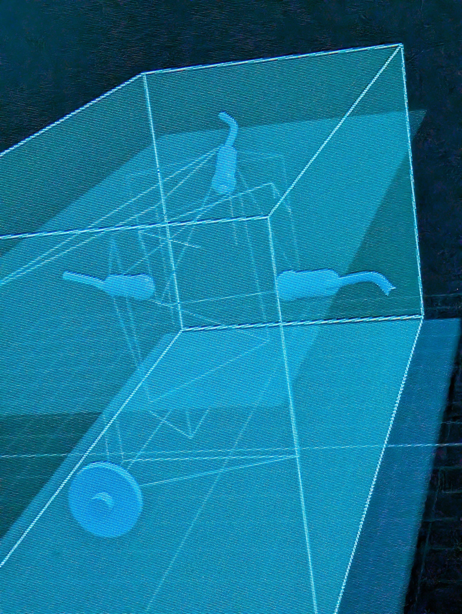

~ WELCOME TO OUR LITTLE PATCH OF WATER ~
Sync Tank
Connected tanks. Shared perspectives. Local control.
Cameras in curious places, tiny underwater neighborhoods, and computers that help us look a little closer. This is our ongoing experiment in open-source aquaristics.
One project, many perspectives
Sync Tank connects aquarium cameras, Raspberry Pi nodes, inspection tools, and habitat maps into one local system. Each tank keeps its identity. Each camera has a place. Useful observations stay connected to where they happened.
- THE LOCAL NETWORK
- Tank Pis collect their cameras and devices. A shared Sync hub brings the installation together over the LAN. The current setup starts with two tanks.
- EYES IN THE WATER
- Floaters provide fixed camera views. Reels reach small spaces. Reeflex and Raydar explore motorized inspection, with limits and stop controls.
- A MAP OF THE HABITAT
- The interactive 3D tank model places cameras, their viewing directions, and interior landmarks alongside the real aquarium.
- SEE SEA TV
- The camera display is one part of Sync Tank: browse perspectives, follow a rotating feed, and connect each view to its tank.
- SIGHTINGS
- Save an observation with its image, tank, camera, and time. Local motion analysis helps notice activity; optional AI field notes are requested by a person.
This is the public project scrapbook. Live cameras and hardware controls run on your local Sync hub.
Postcards from the tank
Real habitats, workbench experiments, and a few views from inside the project.

A tiny neighborhood. Plenty of places to hide.

Camera and motion hardware during in-water testing.
{kind=link}

An early spatial model of camera perspectives.

Inside the Reeflex inspection mechanism.
Pull up a tank
No aquarium hardware yet? The repository includes simulated tank nodes so you can explore the system before connecting cameras or motors.
- Start the hardware-free demo
- Set up a Raspberry Pi tank node
- Run the Sync hub & display
- Share an experiment or report a bug
Built for local ownership and voluntary sharing. Ordinary aquarium care comes first; increasingly autonomous inspection is still a work in progress.